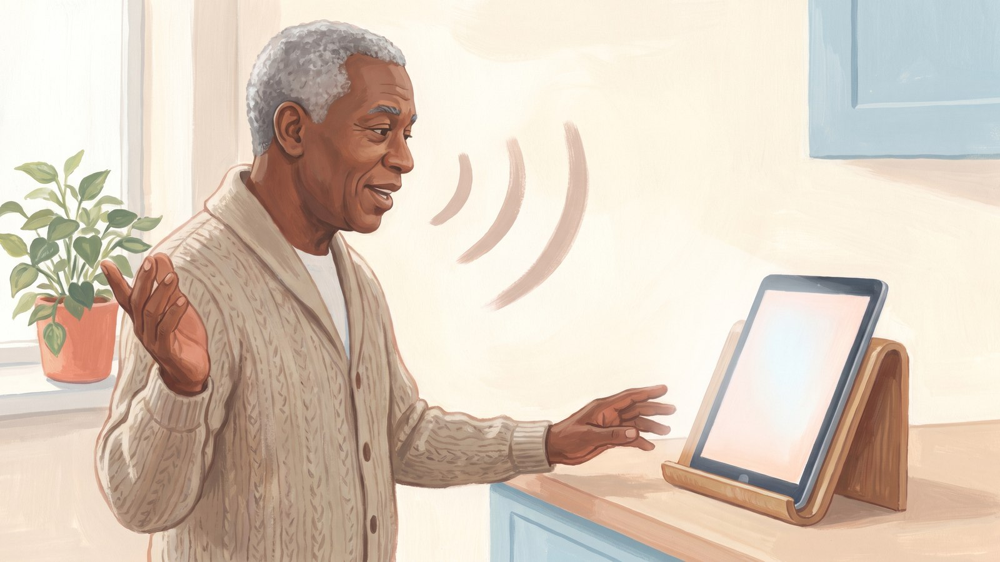

Talk Instead of Typing, and Ask Again Until It Is Clear

Small keys and small print make any phone or tablet tiring to use. In this lesson you will speak to your AI app and have it read to you.
You will also practise six short phrases that steer an answer until it is clear. The keyboard microphone and larger text are built into your device. You do not need a paid plan for them.
Three ways to skip typing
1. The microphone key on your keyboard. Tap the box where you type, and the keyboard appears. Find the small microphone, tap it and speak. Your words turn into text. This is called dictation, which means typing by voice. Use it when you want to check your words before you send them.
- iPhone or iPad: look for the small microphone on the keyboard or beside the box where you type. If it is missing, open Settings, tap General, tap Keyboard, then turn on Enable Dictation. Apple's steps: iPhone, iPad.
- Android with Google's Gboard keyboard: the microphone is at the top of the keyboard. Tap it, wait for the words "Speak now", then talk. Google's steps.
2. The app's own voice button. This starts a spoken conversation. You talk, and the app answers out loud. Use it when your hands are busy. The button is in or beside the box where you type.
On their help pages in October 2026, ChatGPT and Copilot call it the Voice icon. Gemini calls it Live. Claude calls it voice mode and shows a sound-wave symbol. Buttons move when apps are updated, so check your app's help page if yours looks different.
Free plans can limit spoken conversations, and some apps offer them only on certain plans or in certain regions. If the app says you have reached a limit, carry on with the keyboard microphone.
3. The read-aloud button. This reads a written answer to you. Use it when your eyes are tired. Look under or beside the answer for a small speaker, or the words Read aloud or Listen. Gemini calls it Listen. Not every app has one. The exercise below gives you another way.
Make the screen easier on your eyes
Text size is a setting on your device, not in the AI app. Change it once, and apps that support the setting will follow it.
- iPhone or iPad: open Settings, tap Accessibility, tap Display & Text Size, then tap Larger Text. Drag the slider. Apple's steps: iPhone, iPad.
- Android: open Settings, type "Font size" in the search box, select it, and move the slider. Menus on Samsung phones, other makes and older versions of Android may look different. Google's steps.
Apple notes that very large text can make buttons harder to tap. Go up one step at a time and see how it feels.
You can also ask the app to change how it writes. Say: "Use short sentences and a numbered list." Short lines are easier to follow on a small screen.
Speak naturally, and ask again
Talk the way you would to a helpful person at a counter. You can pause. You can correct yourself. Say "No, I meant..." and carry on.
If you are more comfortable in another language, try asking in it. Language support differs from app to app.
Asking again is the normal way to use this tool. It is not a sign you did something wrong. These six follow-ups work well by voice:
- "Shorter, please."
- "Explain it in plainer words."
- "Give me an everyday example."
- "Put it in numbered steps."
- "What does that word mean?"
- "Start again. I meant..."
Keep one more phrase handy. Call it the honesty question: "How sure are you, and where could I confirm this?"
The app may still sound confident when it is wrong. So ground rule 2 stays in place: check anything that matters.
You are in control of the microphone
An app can use your microphone only after you say yes. Your device asks you the first time. That yes is called a permission.
You can look at this permission, or switch it off, at any time:
- iPhone or iPad: open Settings, tap Privacy & Security, then tap Microphone. Each app on the list has its own switch. Apple's steps: iPhone, iPad.
- Android: open Settings, tap Apps, tap the name of your AI app, then tap Permissions. The wording can differ by make of phone. Google's steps.
On an iPhone or iPad, watch the top of the screen. A small orange indicator appears while an app is using the microphone.
What you say becomes text in your chat, and it is saved like a typed message. Some apps also keep the sound recording for a time. Your app's privacy page explains what it keeps. Lesson 7 shows how to delete a chat.
Safety minute
Talking out loud does not change the rules. Never read out a card number, PIN, password or one-time code. Not in an AI chat, and not to any caller.
A one-time code is the short number a bank or service sends to confirm it is you.
If a caller or a screen asks for one of these, stop and hang up. Then phone the organization yourself, on a number you already have, such as the one on the back of your card. The Canadian Anti-Fraud Centre has more advice on its page Protect yourself from fraud.
The three ground rules, the same in every lesson:
- Keep private numbers out.
- Check anything that matters.
- It is not your doctor, lawyer or financial adviser.
Rule 3 is meant plainly. An AI app is not a doctor, a lawyer or a financial adviser, however sure it sounds.
Try it: Ask out loud (about 10 minutes, phone or tablet)
- Open your AI app. Use this made-up practice question: "My spider plant has brown tips on its leaves. What could be causing that?" If you prefer, ask about another thing in the room, such as a kitchen tool.
- Tap the box where you type, then tap the microphone on your keyboard. Ask the question aloud. Do not say your address, an account number or anything about your family. When your words appear as text in the box, tap send.
- Use two follow-ups by voice. First say: "Explain it in plainer words." Send it. Then say: "Put it in three numbered steps." Send it.
- Tap the read-aloud button to hear the answer. If your app does not have one, make the text one size larger in your device settings and read it instead.
- Open your device settings and find where the microphone permission for the app is shown, so you know where it lives. The steps are in the section "You are in control of the microphone". You do not need to change it.
- Your win for today: a whole conversation without typing, steered by you.
Prompts you can copy
Ask about something in the room
Make the answer easier to read
Start again
The honesty question
Before you move on
Sources checked for this lesson: Apple Support: Dictate text on iPhone • Apple Support: Dictate text on iPad • Google Gboard Help: Type with your voice • Apple Support: Make text easier to read on iPhone • Apple Support: Make text easier to read on iPad • Apple Support: Change the font size on your iPhone, iPad, and iPod touch • Google Android Accessibility Help: Change text & display settings • Apple Support: Control access to hardware features on iPhone • Apple Support: Control access to hardware features on iPad • Google Android Help: Change app permissions on your Android phone • OpenAI Help Center: ChatGPT Voice • OpenAI Help Center: Voice Dictation - FAQ • Google Gemini Apps Help: Talk naturally with Gemini Live • Google Gemini Apps Help: Change Gemini's voice • Google Gemini Apps Help: Gemini Apps Privacy Hub • Microsoft Support: Get started with voice features in Microsoft Copilot • Anthropic Claude Help Center: Use voice mode • Anthropic Privacy Center: What personal data is collected when using dictation on the Claude mobile apps? • Canadian Anti-Fraud Centre: Protect yourself from fraud